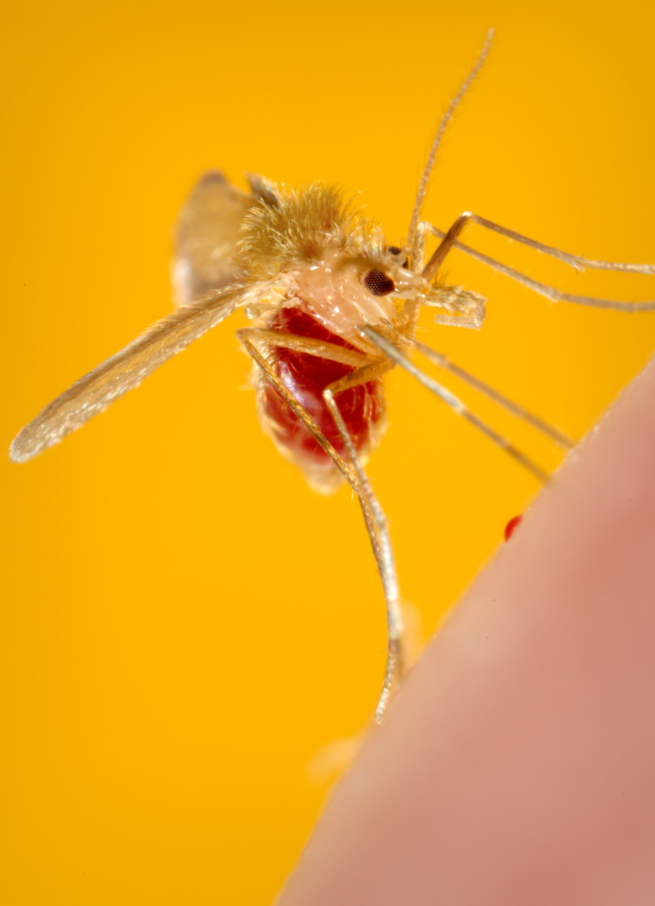
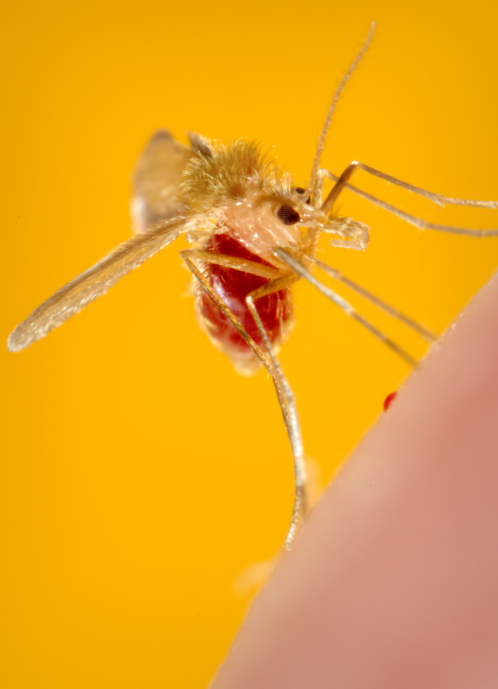

Моски́ты (лат. Phlebotominae) — подсемейство длинноусых двукрылых насекомых комплекса гнуса. Распространены преимущественно в тропиках и субтропиках. В отличие от комаров, личинки москитов развиваются во влажной почве, а не в воде. Включает несколько родов, в частности, Phlebotomus и Sergentomyia в Старом Свете и Lutzomyia в Новом Свете, в которые включается в общей сложности более 700 видов. Представители этих родов являются переносчиками заболеваний между людьми и животными, в частности — лейшманиозов, бартонеллёза, лихорадки паппатачи (москитная лихорадка). Укусы москитов вызывают флеботодермию.
Русское название заимствовано в первой половине XIX в. из испанского, где mosquito — производное от mosca «муха», буквально — «маленькая мушка».
Москиты — насекомые относительно древние, вероятное время их возникновения относят к нижнему меловому периоду. Первое описание самца неизвестного рода было опубликовано в Риме Филиппо Бонанни в 1691 году. Типовой вид, Phlebotomus papatasi, был описан Скополи в 1786 г., однако связь между москитами и заболеваниями людей была известна и раньше: ещё в 1764 г. испанский врач Косме Буэно опубликовал книгу о народных представлениях про передачу лейшманиоза и бартонеллёза в Перуанских Андах, где указал, что местное население связывает возникновение этих болезней с укусами мелких насекомых, называемых «uta».
Размер — 1,5—2 мм, редко превышает 2.5 мм, цвет варьирует от почти белого до почти чёрного. Ноги и хоботок довольно длинные. У москитов три отличительных характеристики: в покое крылья подняты под углом над брюшком, тело покрыто волосками, перед укусом самка обычно совершает несколько прыжков по хозяину, прежде чем впиться в него. Передвигаются обычно короткими прыжками, летают плохо, скорость полёта обычно не превышает 4 м/с.
 
